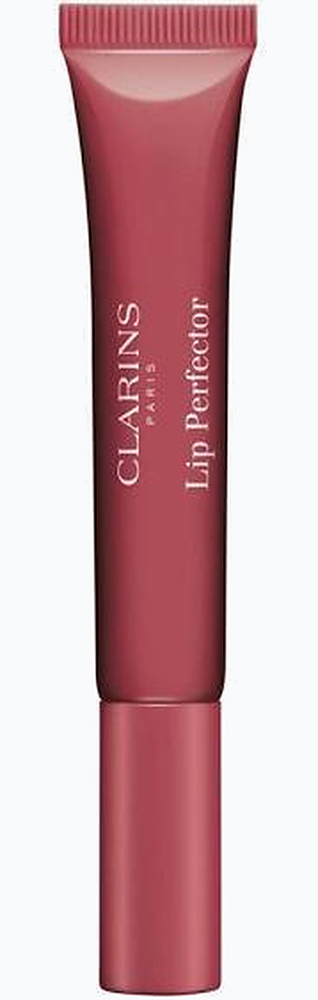
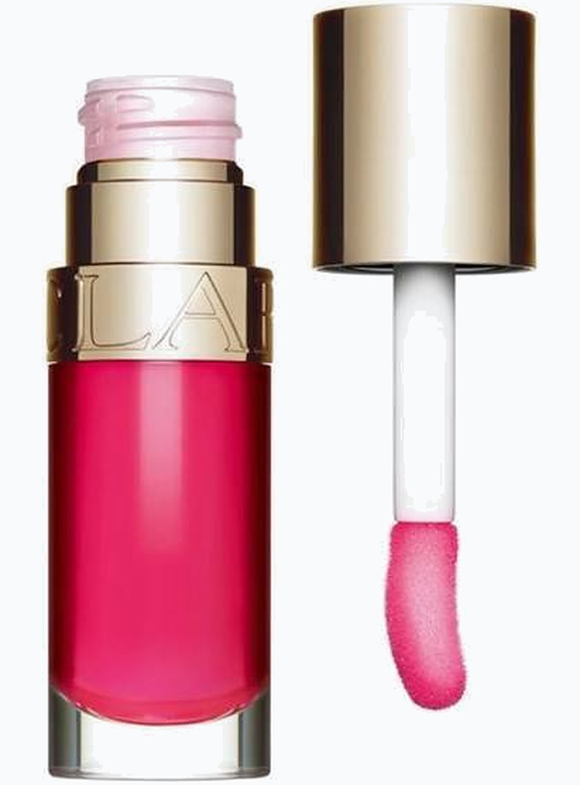

Two ways to finish a look.
The Lip Perfector and the Lip Oil, side by side. Choose a shade on either to see it up close.

Care first
Comfortable color that keeps lips feeling soft.
Two textures
A soft tube gloss or a glossy oil, depending on your mood.
Find your match
Answer a few questions and get a shade suggestion.